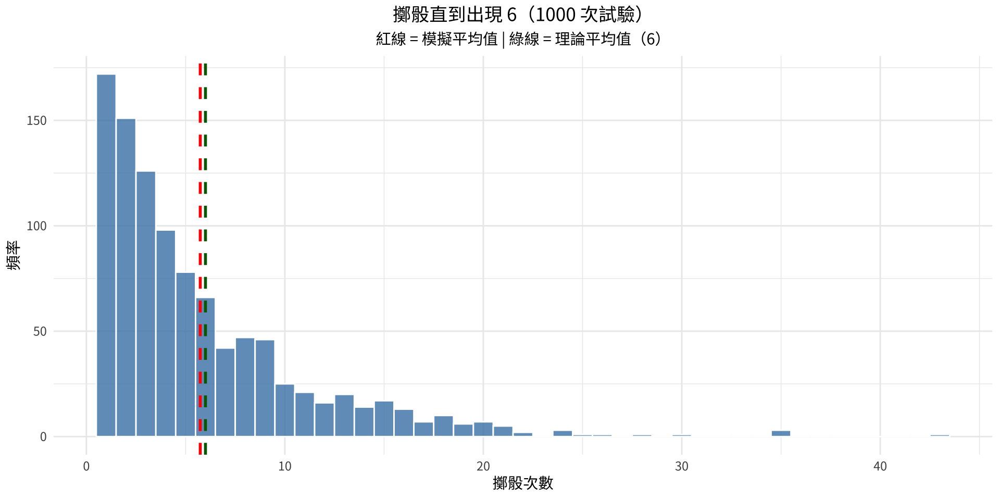
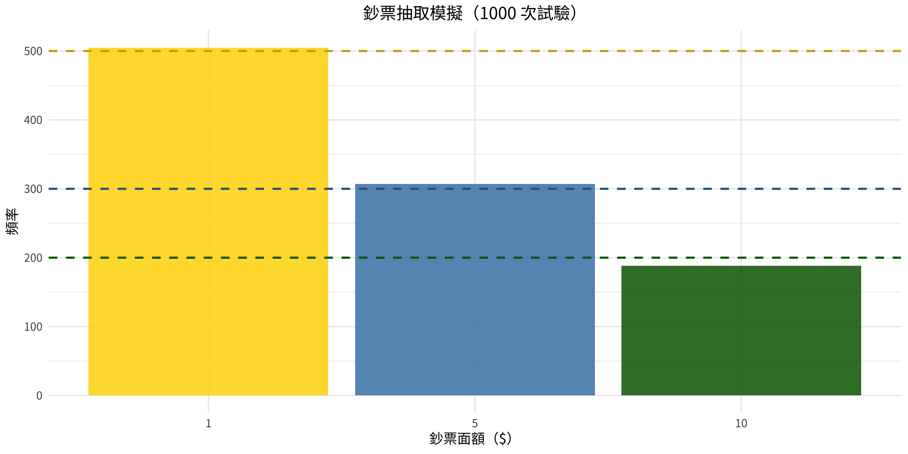

states <- c("Alabama","Alaska","Arizona","Arkansas","California",
"Colorado","Connecticut","Delaware","Florida","Georgia",
"Hawaii","Idaho","Illinois","Indiana","Iowa",
"Kansas","Kentucky","Louisiana","Maine","Maryland",
"Massachusetts","Michigan","Minnesota","Mississippi","Missouri",
"Montana","Nebraska","Nevada","New Hampshire","New Jersey",
"New Mexico","New York","North Carolina","North Dakota","Ohio",
"Oklahoma","Oregon","Pennsylvania","Rhode Island","South Carolina",
"South Dakota","Tennessee","Texas","Utah","Vermont",
"Virginia","Washington","West Virginia","Wisconsin","Wyoming")統計學
第14章：抽樣與模擬
劉昱佑
實踐大學
2026-06-04
本章概述
為何研究抽樣與模擬？
當母體規模過大無法完整研究時，研究者依賴樣本來推論母體。當真實實驗過於危險、昂貴或耗時時，模擬提供了安全且具成本效益的替代方案。
隨機數字是兩種技術的核心引擎。
本章主題：
- 14-1： 常見抽樣技術
- 14-2： 調查與問卷設計
- 14-3： 模擬技術與蒙地卡羅法
第 14-1 節：常見抽樣技術
為何使用樣本？
使用樣本的三個理由
- 節省時間與金錢 — 研究整個母體通常不切實際
- 使原本不可能的研究成為可能 — 例如：破壞性測試纜線強度後就沒東西可賣；血液膽固醇分析無法用盡所有血液
- 允許更深入的研究 — 較小的樣本可進行更詳細的訪談，收集更豐富的資料
關鍵要求： 樣本必須是隨機的 — 母體中的每個成員都必須有相同的被選機率。隨機樣本是無偏的；非隨機樣本是有偏的。
四種基本抽樣方法
概覽
| 方法 | 核心概念 |
|---|---|
| 隨機抽樣 | 使用隨機數字選取研究對象 |
| 系統抽樣 | 隨機起點後，每隔 k 個元素選取一個 |
| 分層抽樣 | 分成同質子群體；各層分別抽樣 |
| 集群抽樣 | 選取一個已存在的完整群體作為樣本 |
隨機抽樣
隨機抽樣
母體的每個元素均編號，並使用隨機數字選取樣本。
常見錯誤：
- 訪問「街頭路人」（涵蓋偏誤）
- 電話投票（自我選擇偏誤）
- 郵件調查（無回應偏誤）
正確方法： 使用隨機數字表或電腦產生的隨機數字。
例 14-1：電視節目採訪 — 隨機樣本
問題
一位電視節目製作人只能採訪 50 州中的 10 位州長。請使用隨機數字表，從 50 個州中選取隨機樣本 10 個州。
例 14-1：數學解法
解題步驟
步驟 1： 依字母順序將各州編號為 01–50（01 = Alabama，02 = Alaska，…，50 = Wyoming）
步驟 2： 使用隨機數字表，從選定位置讀取兩位數字：
選取的數字：27, 43, 34, 06, 13, 29, 01, 39, 23, 35
（捨棄大於 50 的數字及重複數字；不放回抽樣）
步驟 3： 對應各州：
| 編號 | 州名 | 編號 | 州名 | |
|---|---|---|---|---|
| 27 | 內布拉斯加州 | 29 | 新罕布夏州 | |
| 43 | 德克薩斯州 | 01 | 阿拉巴馬州 | |
| 34 | 北達科塔州 | 39 | 羅德島州 | |
| 06 | 科羅拉多州 | 23 | 明尼蘇達州 | |
| 13 | 伊利諾州 | 35 | 俄亥俄州 |
例 14-1：R 解法
選取的州編號： 31 15 14 3 42 43 37 48 25 26 選取的州： 03. Arizona
14. Indiana
15. Iowa
25. Missouri
26. Montana
31. New Mexico
37. Oregon
42. Tennessee
43. Texas
48. West Virginia系統抽樣
系統抽樣
- 將母體所有元素編號
- 計算間隔 k = N/n（母體大小 ÷ 樣本大小）
- 從 1 到 k 中隨機選取起始點
- 之後每隔 k 個元素選取一個
優點： 操作簡便；不需要完整的隨機數字列表。
注意： 避免對具有與間隔 k 相符週期性規律（例如男女交替）的列表使用系統抽樣。
例 14-2：電視節目採訪 — 系統抽樣
問題
使用相同的 50 州母體，選取 10 個州的系統樣本。
例 14-2：數學解法
解題步驟
步驟 1： 將各州編號 01–50
步驟 2： k = 50 / 10 = 5 → 每 5 個州選取一個
步驟 3： 隨機起點：4（從 1–5 中選取）
步驟 4： 從 4 開始每隔 5 個選取： 4, 9, 14, 19, 24, 29, 34, 39, 44, 49
| 編號 | 州名 | 編號 | 州名 | |
|---|---|---|---|---|
| 04 | 阿肯色州 | 29 | 新罕布夏州 | |
| 09 | 佛羅里達州 | 34 | 北達科塔州 | |
| 14 | 印地安納州 | 39 | 羅德島州 | |
| 19 | 緬因州 | 44 | 猶他州 | |
| 24 | 密西西比州 | 49 | 威斯康辛州 |
例 14-2：R 解法
隨機起點： 2 選取的州編號： 2 7 12 17 22 27 32 37 42 47 選取的州： 02. Alaska
07. Connecticut
12. Idaho
17. Kentucky
22. Michigan
27. Nebraska
32. New York
37. Oregon
42. Tennessee
47. Washington分層抽樣
分層抽樣
母體依共同特徵（如性別、年級、地區）劃分為層（子群體）。再從每個層中分別抽取隨機樣本。
優點： 確保每個重要子群體都有代表性。
缺點： - 層數眾多時需耗費大量心力 - 當分組標準複雜或模糊時操作困難
比例分層： 各層的樣本大小與該層佔總母體的比例成正比。
例 14-3：學生的分層樣本
問題
從一個由 20 名學生組成的班級（10 男 10 女；含大一及大二生）中，依性別與年級選取 8 人的分層樣本。
四個層：
| 第 1 組 | 男性大一生（5 人） | 第 3 組 | 女性大一生（5 人） |
|---|---|---|---|
| 第 2 組 | 男性大二生（5 人） | 第 4 組 | 女性大二生（5 人） |
例 14-3：數學解法
解題步驟
步驟 1： 劃分為 4 層（男/女 × 大一/大二）
步驟 2： 每層有 5 名成員，各選取 8/4 = 2 人
步驟 3： 使用隨機數字，從各組各選 2 人：
| 組別 | 選取者 |
|---|---|
| 男性大一生 | Peterson, John；Meloski, Gary |
| 男性大二生 | Brown, Danny；Lyons, Larry |
| 女性大一生 | Bear, Theresa；Collins, Carolyn |
| 女性大二生 | Toms, Debbie；Unger, Roberta |
例 14-3：R 解法
students <- data.frame(
name = c("Ald P","Brown D","Bear T","Carson S","Collins C",
"Davis W","Hogan M","Jones L","Lutz H","Lyons L",
"Martin J","Meloski G","Oeler G","Peters M","Peterson J",
"Smith N","Thomas J","Toms D","Unger R","Zibert M"),
gender = c("M","M","F","F","F","M","M","F","M","M",
"F","M","M","F","M","F","M","F","F","F"),
grade = c("Fr","So","Fr","Fr","Fr","Fr","Fr","So","So","So",
"Fr","Fr","So","So","Fr","Fr","So","So","So","So")
)# A tibble: 8 × 3
# Groups: gender, grade [4]
name gender grade
<chr> <chr> <chr>
1 Bear T F Fr
2 Smith N F Fr
3 Jones L F So
4 Zibert M F So
5 Davis W M Fr
6 Meloski G M Fr
7 Lutz H M So
8 Thomas J M So 集群抽樣
集群抽樣
選取一個自然存在的群體（集群）作為樣本。可使用集群的全部成員，或從中抽取隨機子集。
範例： 整個學校班級、某城市街區的所有居民、某選區的所有選民。
優點： 降低成本；簡化田野工作；操作方便。
缺點： 同一集群內的成員往往比整體母體更具同質性 — 樣本可能缺乏多樣性。
抽樣方法：綜合比較
一覽表
| 方法 | 最適用情境 | 注意事項 |
|---|---|---|
| 隨機抽樣 | 一般用途 | N 很大時耗時 |
| 系統抽樣 | 已有編號列表 | 注意列表中的週期性規律 |
| 分層抽樣 | 子群體代表性很重要 | 層數多 = 工作量大 |
| 集群抽樣 | 成本/後勤是主要考量 | 集群內同質性 |
其他方法： 序列抽樣（品質管制）、雙重抽樣（兩階段資格篩選）、多階段抽樣（適用於超大母體的組合方法）。
第 14-2 節：調查與問卷設計
調查類型
兩種調查形式
訪員施測： 由調查員以面對面、電話或在購物中心進行訪問。
自填問卷： 受訪者獨立完成問卷 — 郵件、電子郵件或團體施測。
重要提示： 問題的措辭可能大幅改變受訪結果。研究者必須謹慎設計問題，避免引導受訪者趨向預定答案。
五種常見問卷缺失
請避免以下錯誤
- 偏頗問題 — 措辭引導受訪者朝特定方向回答 例：「即使民調顯示瓊斯會輸，你還是會投票給他嗎？」
- 混淆用詞 — 模糊用語導致誤解 例：「你覺得節食的人活得比較久嗎？」（哪種節食？）
- 雙管問題 — 一個問題同時詢問兩件事 例：「你贊成用特別稅來資助全民健保嗎？」
- 雙重否定 — 兩個否定製造混亂 例：「你認為設置禁菸區是不恰當的嗎？」
- 問題順序不當 — 前面的問題影響後面問題的回答
其他調查偏誤
其他偏誤來源
- 社會期許偏誤： 受訪者回答他們認為訪員想聽的答案
- 順從偏誤： 部分人為避免衝突而同意任何陳述
- 保密性與匿名性： 受訪者認為身分被知曉時行為不同
- 時間與地點： 空難後進行的航空安全調查結果會有差異
- 開放式 vs. 封閉式問題：
- 開放式：「列出三項退休活動」— 豐富但難以彙整
- 封閉式： 從給定選項中選擇 — 易於統計但限制了回答範圍
第 14-3 節：模擬技術與蒙地卡羅法
什麼是模擬？
模擬的定義
模擬技術使用機率實驗，重現現實生活中過於昂貴、危險或耗時而無法直接研究的情境。
歷史起源： 西洋棋是戰爭的模擬發明。現代數學模擬源於 1940 年代，物理學家 John Von Neumann 與 Stanislaw Ulam 將其用於研究核反應爐設計中的中子行為。
現代工具： 電腦每秒可產生隨機數字、統計結果並計算機率數百萬次。
蒙地卡羅法
蒙地卡羅法的六個步驟
- 列出 實驗所有可能結果
- 分配機率 給每個結果
- 對應 結果至隨機數字範圍
- 抽取 隨機數字並執行實驗
- 重複 並統計結果
- 計算統計量 並得出結論
關鍵洞見： 隨著重複次數增加，結果會趨近理論值（大數法則）。
建立隨機數字對應關係
結果與數字對應範例
| 實驗 | 結果 | 隨機數字 |
|---|---|---|
| 擲硬幣（50/50） | 正面 | 1,3,5,7,9 |
| 擲硬幣 | 反面 | 0,2,4,6,8 |
| 擲骰子（各 1/6） | 1–6 | 1,2,3,4,5,6（忽略 7,8,9,0） |
| 轉盤（4 值，各 1/4） | 1 | 1–2；2→3–4；3→5–6；4→7–8（忽略 9,0） |
| 打鼾（20% 機率） | 打鼾 | 1,2；不打鼾→3–9,0 |
例 14-4：打鼾模擬
問題
根據美國疾管署資料，約 20% 的人在睡眠中打鼾。模擬 20 人的樣本，並確認有多少人打鼾。
例 14-4：數學解法
解題步驟
由於 20\% = 1/5，每五人中有一人打鼾。
對應： 數字 1、2 → 打鼾；數字 0、3–9 → 不打鼾
隨機數字樣本： 7\ 2\ 7\ 4\ 8\ 2\ 2\ 3\ 6\ 1\ 6\ 0\ 4\ 6\ 1\ 5\ 5\ 3\ 8\ 9
打鼾者（數字 1 或 2）：位置 2、6、7、10、15 → 20 人中有 5 人打鼾
比例：5/20 = 0.25，接近理論值 20%。
例 14-4：R 解法
模擬結果（1 = 打鼾，0 = 不打鼾）：0 0 0 0 0 0 0 0 0 0 1 0 0 1 0 0 1 0 0 0 打鼾人數： 3 （共 20 人）比例： 0.15 （理論值：0.20）例 14-5：網球賽模擬
問題
Bill 的網球實力是 Mike 的兩倍。模擬他們之間的 5 場比賽。
由於 P(\text{Bill 獲勝}) = 2/3，P(\text{Mike 獲勝}) = 1/3：
對應： 數字 1–6 → Bill 獲勝；數字 7–9 → Mike 獲勝；數字 0 → 忽略
使用的隨機數字： 86314
| 數字 | 8 | 6 | 3 | 1 | 4 |
|---|---|---|---|---|---|
| 勝者 | Mike | Bill | Bill | Bill | Bill |
結果： Bill 贏 4 場，Mike 贏 1 場。
例 14-5：R 解法
逐場結果： 第 1 場： Bill
第 2 場： Bill
第 3 場： Mike
第 4 場： Mike
第 5 場： Bill
Bill 獲勝： 3 場Mike 獲勝： 2 場例 14-6：擲骰子直到出現 6
問題
反覆擲骰子直到出現 6 為止。利用模擬，找出所需的平均擲骰次數。重複實驗 20 次。
例 14-6：數學解法
解題步驟
對應： 數字 1–6 → 骰子點數；數字 7、8、9、0 → 忽略
範例： 隨機區塊 857236 → 忽略 8、忽略 5、忽略 7、擲出 2、擲出 3、擲出 6 → 4 次
經過 20 次模擬試驗，總擲骰次數 = 96： \bar{X} = \frac{96}{20} = 4.8 \text{ 次}
理論值（幾何分配的期望值）： E(X) = \frac{1}{p} = \frac{1}{1/6} = 6
重複次數越多，模擬結果越接近 6。
例 14-6：R 解法
各次試驗擲骰次數： 1 11 2 5 1 1 2 2 7 1 3 1 1 22 5 3 6 1 1 2 總擲骰次數： 78 模擬平均值： 3.9 理論平均值（1/p = 6）： 6 例 14-6：視覺化
ggplot(data.frame(rolls = many_trials), aes(x = rolls)) +
geom_histogram(binwidth = 1, fill = "steelblue",
color = "white", alpha = 0.8) +
geom_vline(xintercept = mean(many_trials),
color = "red", linetype = "dashed", linewidth = 1) +
geom_vline(xintercept = 6,
color = "darkgreen", linetype = "dashed", linewidth = 1) +
labs(title = "擲骰直到出現 6（1000 次試驗）",
subtitle = "紅線 = 模擬平均值 | 綠線 = 理論平均值（6）",
x = "擲骰次數", y = "頻率")
例 14-7：選取鑰匙
問題
某人有 4 把鑰匙，其中只有一把能開鎖。她隨機逐一嘗試（不放回）直到找到正確鑰匙。求所需的平均嘗試次數。重複 25 次。
例 14-7：數學解法
解題步驟
設定： 鑰匙編號 1–4；第 2 把是正確的。
對應： 只使用數字 1–4（忽略 5–9、0）。計算數字直到出現 2 為止。
範例： 1432 → 嘗試鑰匙 1、再試 4、再試 3、試 2 → 4 次
經 25 次試驗：\sum X = 54
\bar{X} = \frac{54}{25} = 2.16 \text{ 次}
理論平均值： E(X) = \frac{n+1}{2} = \frac{4+1}{2} = 2.5
例 14-7：R 解法
各次試驗嘗試次數： 1 3 2 1 1 4 3 4 2 4 3 2 3 2 2 3 3 4 1 2 2 1 1 4 2 總嘗試次數： 60 模擬平均值： 2.4 理論平均值（(n+1)/2 = 2.5）： 2.5 例 14-8：選取鈔票
問題
一個箱子裡有 5 張一美元、3 張五美元 和 2 張十美元。某人隨機取出一張鈔票。求所取鈔票的期望值。重複實驗 25 次。
例 14-8：數學解法
解題步驟
機率： P(\$1) = 5/10 = 0.5，P(\$5) = 3/10 = 0.3，P(\$10) = 2/10 = 0.2
對應： 數字 1–5 → \$1；數字 6–8 → \$5；數字 9、0 → \$10
25 次模擬抽取： 總計 = \$116
\bar{X} = \frac{116}{25} = \$4.64
理論期望值： E(X) = 0.5(1) + 0.3(5) + 0.2(10) = 0.5 + 1.5 + 2.0 = \$4.00
模擬值接近理論值；重複次數越多，結果越接近。
例 14-8：R 解法
抽取的鈔票面額：1 1 1 10 10 5 1 1 1 1 5 1 1 1 5 10 5 1 1 10 5 1 1 1 10 總計： 90 模擬平均值：$ 3.6 理論 E(X)：$ 4 例 14-8：視覺化
set.seed(33)
many_draws <- sample(bills, size = 1000,
replace = TRUE, prob = probs)
ggplot(data.frame(value = many_draws), aes(x = factor(value))) +
geom_bar(fill = c("gold","steelblue","darkgreen"), alpha = 0.85) +
geom_hline(yintercept = 1000 * probs, linetype = "dashed",
color = c("gold3","steelblue4","darkgreen"),
linewidth = 0.8) +
labs(title = "鈔票抽取模擬（1000 次試驗）",
x = "鈔票面額（$）", y = "頻率")
蒙地卡羅法：總結
關鍵重點
| 步驟 | 動作 |
|---|---|
| 1 | 列出所有可能結果 |
| 2 | 分配機率 |
| 3 | 對應結果至隨機數字範圍 |
| 4 | 抽取隨機數字，執行實驗 |
| 5 | 重複並統計 |
| 6 | 計算統計量，得出結論 |
請記住： 模擬是對精確機率計算的近似 — 而非替代。大數法則保證隨著重複次數足夠多時會收斂。
現代應用： NASA 飛行模擬器、電玩物理引擎、金融風險建模、藥物試驗設計、氣候建模。
第14章總結
核心概念
第 14-1 節 — 抽樣： - 樣本節省時間、金錢，並使原本不可能的研究成為可能 - 四種方法：隨機、系統、分層、集群 - 無偏樣本要求每位研究對象都有相同的被選機率
第 14-2 節 — 調查： - 問題措辭、順序與形式均影響調查結果 - 避免：偏頗問題、混淆用詞、雙管問題、雙重否定、順序不當
第 14-3 節 — 模擬： - 蒙地卡羅法：對應結果至隨機數字範圍，重複、統計 - 當 n \to \infty 時，模擬平均值趨近理論值 - R 的 sample()、rbinom() 和 replicate() 讓模擬變得簡便
版權聲明
版權聲明： 本教材改編自 Bluman, A. G. (2011). Elementary statistics: A step by step approach (8th ed.). McGraw-Hill。所有權利保留給原著作者及出版商。
僅限非商業用途： 本教材嚴格限於教育用途，不得用於商業獲利。
適當引用： 任何複製、散布或使用本教材者，必須提供原始來源的適當引用。

Elementary Statistics: A Step by Step Approach